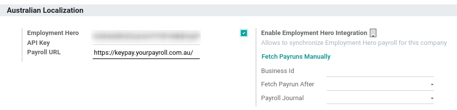

Australia¶
Héroe de empleo de la nómina australiana¶
El módulo de Héroe de Empleo sincroniza los asientos contables de la nómina (por ejemplo, gastos, contribuciones sociales, pasivos, impuestos) desde el módulo a Odoo automáticamente. La administración de la nómina se hace dentro de Héroe de empleo. Solo registramos los asientos contables en Odoo.
Importante
KeyPay se convirtió en Employment Hero en marzo de 2023.
Configuración¶
Activar el módulo Employment Hero Australian Payroll (nombre técnico:
l10n_au_keypay).Configure la API Employment Hero yendo a . Más campos se hacen visibles después de hacer clic en Habilitar la integración Employment Hero.
Podrá encontrar la clave API en la sección de Mi cuenta de la plataforma Employment Hero.

El URL de nómina se completa automáticamente con
https://keypay.yourpayroll.com.au. No cambie esto.Puede encontrar el ID de la empresa en el URL de Employment Hero (es decir,
189241)
Puede elegir cualquier diario de Odoo para registrar los asientos de nómina.
¿Cómo funciona la API?¶
La API sincroniza los asientos de diario de Employment Hero con Odoo y los deja en modo borrador. La referencia incluye el ID de entrada de la nómina de Employment Hero entre paréntesis para que el usuario pueda recuperar fácilmente el mismo registro en Employment Hero y Odoo.

De forma predeterminada, la sincronización se realiza una vez por semana. Puede obtener los registros manualmente accediendo a y, en la opción Habilitar integración de Employment Hero, haga clic en Obtener registros manualmente.
Los asientos de nóminas de Employment Hero también se basan en la contabilidad por partida doble.
Las cuentas utilizadas por Employment Hero se definen en la sección Ajustes de la nómina.

Para que la API funcione, debe crear las mismas cuentas como cuentas automáticas para su negocio con Employment Hero (con el mismo nombre y el mismo código) en Odoo. También debe elegir los tipos de cuenta correctos en Odoo para generar reportes financieros correctos.